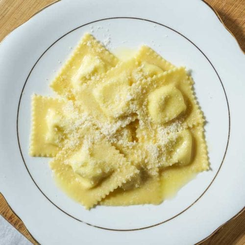

Ravioli

Finished Ravioli dish
The recipe consist in 4 main steps: making pasta dough, preparing the filling, rolling pasta dough into sheets and finally, assembling ravioli.
Ingredients
- For the Pasta Dough
- Flour
- Eggs + Egg yolk
- Olive oil
- For the Ravioli Filling
- Whole Milk Ricotta
- Mascarpone cheese
- Fresh Basil
- Parmesan Cheese
- Egg
Steps
- Make Pasta Dough
- There are several ways to make fresh pasta dough. The food processor method is the fastest. To do so: add the flour, eggs and olive oil to a food processor fitted with the metal blade. Process to form dough, about 15-20 seconds. Remove to your work surface and cover with an upturned bowl for 5 minutes- it will be much easier to knead in the next step.
- Knead dough for 1-2 minutes to form a ball (don’t worry about technique here, the food processor does most of the kneading for you) cover again, and let rest for 30 minutes to 1 hour to relax the gluten.
- Make Ravioli Filling
- While the pasta dough is resting: combine the drained ricotta, mascarpone, chopped basil leaves, Parmesan cheese and egg. Season with salt and pepper; mix well. Give it a taste (it should be highly seasoned). Cover and chill until ready to use. This step can be done 1-2 days in advance.
- Roll Pasta Dough Into Sheets
- Assemble & Cut Ravioli